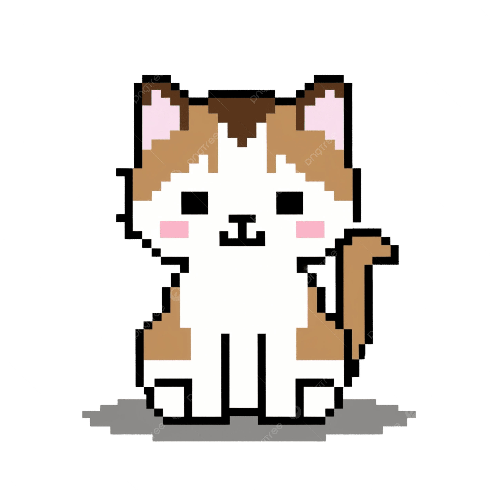

Holi mi amorcito precioso, estoy muy contenta porque hoy celebramos un año o tal vez te esté mostrando esta página en tu cumpleaños, así que estaremos cerca de un año y un mes, bueno, casi un mes porque faltarían 5 días, jiji. Pero bueno, mi amorcito, estoy realmente feliz porque eres mi enevecito precioso. La verdad, nunca pensé que podría sentir algo tan hermoso por alguien y cuando te conocí, no pensé que tú serías la persona por la que mi corazón estallaría de amor. Solo pensé: "¡OMG, qué niño tan lindo!", jiji, pero creí que cuando me veías y yo te veía, la idea de que te gustaba solo era mi ilusión, jiji. Pero gracias al cielo, empecé a hablarte en cuarto, porque sino hubiera valido papa y nunca habríamos podido ser enevecitos. Creo que el destino quería que habláramos y Dios nos juntó jiji, porque hubo muchos factores que permitieron que pudiéramos hablai. Yo cambié mi camino hacia la escuela y justo ese día que nos vimos ,tú te fuiste en metro y llegamos al mismo tiempo jiji. Así que estoy muy feliz de que nos cruzáramos ese día en el metro. También me alegra que los dos sintamos lo mismo el uno por el otro, y desde ese maravilloso día en que te dije que me gustabas, aunque ya lo sabías, y tu como sigma de "Ya lo sabía", jiji. Estaba súper nerviosa ese día, incluso quería llorar de los nervios, pero me controlé. Estaba nerviosa porque no sabía si tú sentías lo mismo que yo y pensaba: "Seguramente voy a valer papita y no va a volver a hablarme, y yo, por ser tímida, nunca le hablaré de nuevo." Pero cuando solo me miraste y dijiste que yo te parecía bonita y buena onda, pensé que no te gustaba y que me dirías algo como que te caía bien, pero no para novios. Pero cuando dijiste que querías una relación, me quedé como: "OMG, ya somos eneves?" y enloqueci, jiji. En ese tiempo, creo que era muy tímida y sentía que debía hacer todo perfectamente o actuar de cierta forma, pero a medida que avanzó nuestra relación, dejé de ser tímida, jiji. Estoy muy contenta con cómo es nuestra relación porque nos apoyamos y estamos el uno para el otro en cualquier momento. Además, podemos expresar lo que sentimos o pensamos sin temor. Aunque sé que a veces puedo ser difícil de entender, estoy muy feliz de que tú estés a mi lado. Me encanta hablar y escuchar cómo nos sentíamos antes de ser novios porque recuerdo cómo me temblaban las manos y quería llorar de los nervios, jiji. Ahora no me pongo nerviosa, pero me lleno de felicidad al esperar verte, jiji, y cuando estoy contigo, exploto de alegría y de amoi. Mi amorcito, en esta página que hice jiji habrá muchas cositas, o varias de mis palabras, jiji, fotos de nosotros y cosas que siento, así como cómo exploto de emoción y amor por ti. También por eso puse un contador de días para que puedas ver cuántos días llevamos juntos desde que comenzamos a salir, jiji. Quiero recordarte lo que siempre te digo y demuestro, mi vida... Te amo mucho y siempre te voy a amar, mi amor; no sabes lo mucho que mi corazoncito siente cuando te veo o cuando te abrazo, siento que solo somos nosotros dos contra el mundo y quiero estar toda la vida contigo hasta que me muera. Quiero formar una familia contigo, eres el único hombre en mi vida, eres todo para mi, eres la luz de mis ojos, mi mundo, eres mi todo, no sabría qué hacer sin ti. También quiero decir que sé que a veces hemos tenido algunas situaciones que nos han hecho sentir triste y también Sé que en algún momento mis acciones no fueron buenas y es algo que creo que nunca voy a poder olvidar, pero ya lo he mejorado, mi amor. Sé que ahora mismo ya pasamos por esa situación y la solucionamos, pero no puedo olvidar lo horrible que fue sentir que en un momento podría perderte, mi amor, y aunque ya habrá pasado un tiempo de esa situación, siento que ese tipo de situaciones nos ha hecho mejorar y estar bien los dos, mi amor. No sé si me doy a entender, pero la verdad, si suceden situaciones donde nos sintamos sad los dos o uno de los dos, pues espero lo podamos resolver y yo sé que sí podremos juntos, mi amorcito. Bueno, mi vida, hice esta página supercute con mucho amoi, jiji, para recolectar recuerdos yyyy mis aprendizajes, xd, para la escuelita que seguramente me van a enseñar en la escuelita yyyyy sí, mi vida, también hice esta página para decirte muchas cosas lindas que seguramente como ya sabes, estoy llorando ahora mismo por las cosas que te digo. Yo pensé que chillaba porque me ganaba el sentimiento y sí, algo así me dijo Gemini, que como mai corazoncito explota de amoi debe de sacar ese amoi y por eso lloro, pero ay, mi amoicito, yo te amo un montón, nunca lo olvides, jiji, eres todoooooo para mí, mi rey, jiji. Pd. Dale click al gatito y va a decir un maullido.
